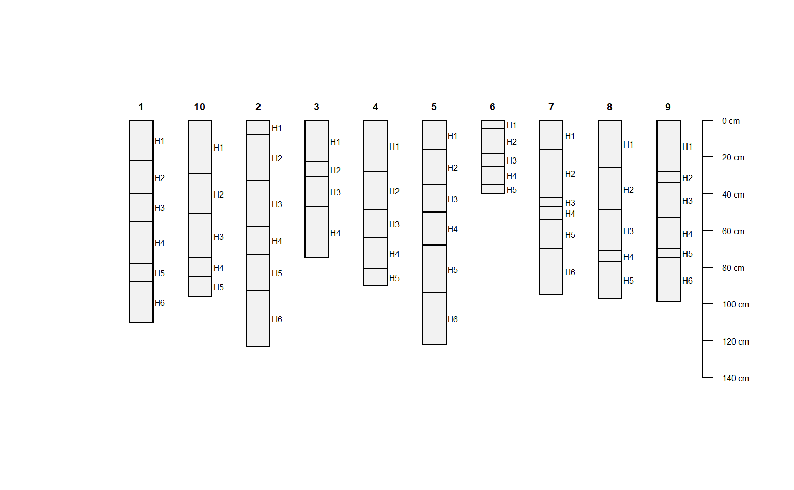
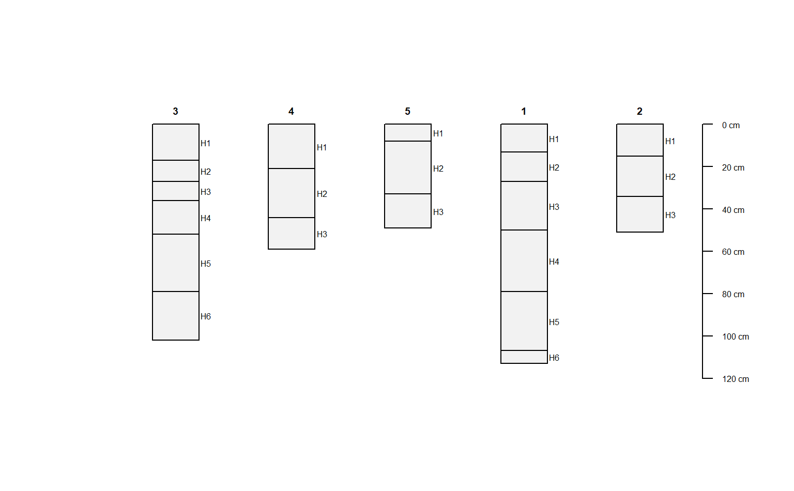

R/Class-SoilProfileCollection.R
SoilProfileCollection-class.RdIn general, one should use depths() to initiate a SoilProfileCollection object from data. However, sometimes there are instances where either an empty, or very specific, object is needed. If that is the case, the general constructor SoilProfileCollection is available.
SoilProfileCollection( idcol = "id", hzidcol = "hzID", hzdesgncol = character(0), hztexclcol = character(0), depthcols = c("top", "bottom"), metadata = list(aqp_df_class = "data.frame", stringsAsFactors = FALSE), horizons = data.frame(id = character(0), hzID = character(0), top = numeric(0), bottom = numeric(0), stringsAsFactors = FALSE), site = data.frame(id = character(0), stringsAsFactors = FALSE), sp = new("SpatialPoints"), diagnostic = data.frame(stringsAsFactors = FALSE), restrictions = data.frame(stringsAsFactors = FALSE) )
| idcol | character Profile ID Column Name |
|---|---|
| hzidcol | character Horizon ID Column Name |
| hzdesgncol | character Horizon Designation Column Name [optional] |
| hztexclcol | character Horizon Texture Class Column Name [optional] |
| depthcols | character, length 2 Top and Bottom Depth Column Names |
| metadata | list, metadata including data.frame class in use and depth units |
| horizons | data.frame An object inheriting from data.frame containing Horizon data. |
| site | data.frame An object inheriting from data.frame containing Site data. |
| sp | SpatialPoints A SpatialPoints object. Generally initialized with |
| diagnostic | data.frame An object inheriting from data.frame containing diagnostic feature data. Must contain profile ID. See |
| restrictions | data.frame An object inheriting from data.frame containing restrictive feature data. Must contain profile ID. See |
idcolcharacter.
hzidcolcharacter.
hzdesgncolcharacter.
hztexclcolcharacter.
depthcolscharacter.
metadatalist.
horizonsdata.frame.
sitedata.frame.
spSpatialPoints.
diagnosticdata.frame.
restrictionsdata.frame.
#> Formal class 'SoilProfileCollection' [package "aqp"] with 11 slots #> ..@ idcol : chr "id" #> ..@ hzidcol : chr "hzID" #> ..@ hzdesgncol : chr(0) #> ..@ hztexclcol : chr(0) #> ..@ depthcols : chr [1:2] "top" "bottom" #> ..@ metadata :List of 5 #> .. ..$ aqp_df_class : chr "data.frame" #> .. ..$ depth_units : chr "cm" #> .. ..$ stringsAsFactors: logi FALSE #> .. ..$ original.order : int(0) #> .. ..$ target.order : int(0) #> ..@ horizons :'data.frame': 0 obs. of 4 variables: #> .. ..$ id : chr(0) #> .. ..$ hzID : chr(0) #> .. ..$ top : num(0) #> .. ..$ bottom: num(0) #> ..@ site :'data.frame': 0 obs. of 1 variable: #> .. ..$ id: chr(0) #> ..@ sp :Formal class 'SpatialPoints' [package "sp"] with 3 slots #> .. .. ..@ coords : num [1, 1] 0 #> .. .. ..@ bbox : logi [1, 1] NA #> .. .. ..@ proj4string:Formal class 'CRS' [package "sp"] with 1 slot #> .. .. .. .. ..@ projargs: chr NA #> ..@ diagnostic :'data.frame': 0 obs. of 0 variables #> ..@ restrictions:'data.frame': 0 obs. of 0 variables## use the depths() formula interface to specify ## profile ID, top and bottom depth and set up ## a SPC that is topologically correct and complete d <- do.call('rbind',lapply(1:10, random_profile)) # promote to SoilProfileCollection and plot depths(d) <- id ~ top + bottom#>plot(d)# split into new SoilProfileCollection objects by index d.1 <- d[1, ] d.2 <- d[2, ] d.345 <- d[3:5, ] # recombine, note that profiles are sorted according to ID d.new <- union(list(d.345, d.1, d.2))#>plot(d.new)#>## depth units du <- depth_units(sp1) depth_units(sp1) <- 'in' depth_units(sp1) <- du ## horizon designation column hzdesgnname(sp1) <- "name" hzdesgnname(sp1)#> [1] "name"#> [1] "A1" "A2" "AB" "BA" "Bt" "Rt" "Oi" "A" "C1" "C2" #> [11] "Oa/A" "AB" "BA" "Bt1" "Bt2" "A1" "A2" "A3" "Bt1" "Bt2" #> [21] "A" "AB" "Bt1" "Bt2" "Oi" "A" "AB1" "AB2" "AB3" "C1" #> [31] "C2" "2C1" "2C2" "3C" "A1" "A2" "Bw1" "Bw2" "Bw3" "C" #> [41] "2C" "3Bwb" "3Cb" "Oi" "A" "AB" "Bw1" "Bw2" "2C1" "2C2" #> [51] "3C" "Oe" "A1" "A2" "AB" "Bw1" "Bw2" "2C" "3Ab" "3Bwb"#> [1] "texture"## get/set metadata on SoilProfileCollection objects # this is a 1-row data.frame m <- metadata(sp1) m$sampler <- 'Dylan' metadata(sp1) <- m ## extract horizon data from SoilProfileCollection objects as data.frame h <- horizons(sp1) # also merge (left-join) of new columns and # replacement of existing columns via horizons<- horizons(sp1) <- h#>#> [1] 60#> id #> 1 P001 #> 2 P002 #> 3 P003 #> 4 P004 #> 5 P005 #> 6 P006 #> 7 P007 #> 8 P008 #> 9 P009## setting site-level data # site-level data from horizon-level data (stored in @horizons) site(sp1) <- ~ group # make some fake site data, and append from data.frame # a matching ID column must be present in both @site and new data # note that IDs should all be character class d <- data.frame(id=profile_id(sp1), p=runif(n=length(sp1)), stringsAsFactors=FALSE) site(sp1) <- d # edit horizon depths horizonDepths(sp1) <- c('t', 'b') horizonDepths(sp1)#> [1] "t" "b"#> [1] "P001-new" "P002-new" "P003-new" "P004-new" "P005-new" "P006-new" "P007-new" #> [8] "P008-new" "P009-new"